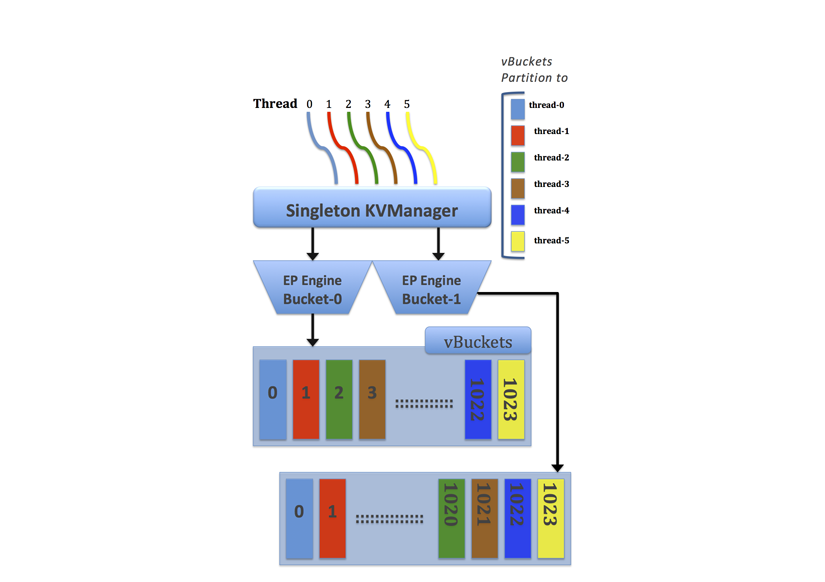

Multiple readers and writers
Multi-threaded readers and writers provide multiple processes to simultaneously read and write data on disk. Simultaneous reads and writes increase disk speed and improve the read rate from disk.
Multiple readers and writers are supported to persist data on disk. For earlier versions of Couchbase Server, each server instance had only single disk reader and writer threads.
Disk speeds have now increased to the point where single read/write threads do not efficiently keep up with the speed of the disk hardware. The other problem caused by single read/write threads is that if you have a good portion of data on disk and not in RAM, you can experience a high level of cache misses when you request this data.
When server nodes are upgraded, the multiple readers and writers setting is implemented with bucket restart and warmup. In this case, install the new node, add it to the cluster, and edit the existing bucket setting for readers and writers.
After rebalancing the cluster, the new node performs reads and writes with multiple readers and writers and the data bucket does not restart or go through a warmup. All existing pre-2.1 nodes remain with a single readers and writers for the data bucket. As pre-2.1 nodes are upgraded and added to the cluster, these new nodes automatically pick up the setting and use multiple readers and writers for the bucket.
The multi-threaded engine includes additional synchronization among threads that are accessing the same data cache to avoid conflicts. To maintain performance while avoiding conflicts over data, Couchbase Server uses a form of locking between threads and thread allocation among vBuckets with static partitioning.
When Couchbase Server creates multiple reader and writer threads, the server assesses a range of vBuckets for each thread and assigns each thread exclusively to certain vBuckets. With this static thread coordination, the server schedules threads so that only a single reader and single writer thread can access the same vBucket at any given time. The image shows six pre-allocated threads and two data Buckets. Each thread has the range of vBuckets that is statically partitioned for read and write access.
